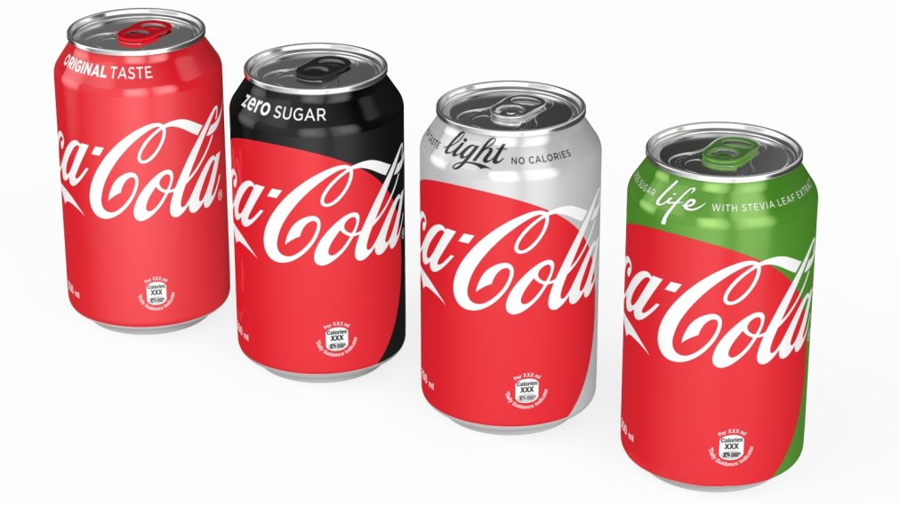
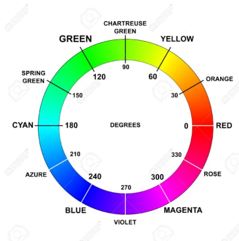

Identificação de Objetos
Nesta atividade, vamos explorar como identificar objetos encontrando seus contornos a partir de segmentação de cores.
Detecção de contornos é uma técnica importante em visão computacional. A ideia é que os contornos são as bordas dos objetos, e portanto, podem ser usados para detectar a localização de objetos, além de outras métricas como centro, área, perímetro, etc.
Fonte das imagens: http://time.com/4299724/coca-cola-diet-coke-redesign/
Componentes conexos e contornos
Neste exercicio vamos trabalhar na segunte imagem. Nosso objetivo é encontrar os contornos da parte vermelha das latinhas de coca-cola.

import cv2
import numpy as np
import matplotlib.pyplot as plt
img = cv2.imread("img/coke-cans.jpg")
coke_hsv = cv2.cvtColor(img, cv2.COLOR_BGR2HSV)
Filtrando o objeto
Revisando o círculo de cores HSV, temos:

Conforme ilustrado acima, a cor vermelha aparece em duas regiões distintas do círculo HSV: uma entre 0 e 30 graus e outra entre 330 e 360 graus.
Uma limitação do OpenCV é sua incapacidade de realizar seleções em intervalos não contínuos diretamente, como seria necessário para a cor vermelha (-30 a 30 graus). Isso representa um desafio na segmentação eficaz do vermelho.
No entanto, uma abordagem viável é realizar duas seleções de intervalos separadas para cada faixa do vermelho, aplicar a segmentação em ambas e, posteriormente, unir as duas máscaras resultantes. Esta técnica permite a segmentação eficiente da cor vermelha, contornando a restrição de seleção de intervalos do OpenCV.
lembrando que o valor HSV na OpenCV fica adaptado para:
Hue (H): No espaço de cores HSV original, o matiz varia de 0 a 360 graus. No entanto, na OpenCV, esse intervalo é mapeado para 0 a 180. Portanto, para converter um valor de matiz do espaço de cores HSV padrão para o utilizado pela OpenCV, você deve dividir o valor por 2 (H/2).
Saturation (S): A saturação no espaço de cores HSV padrão varia de 0 a 100% (representando a intensidade da cor). Na OpenCV, esse intervalo é mapeado para 0 a 255. Portanto, para converter um valor de saturação do espaço de cores HSV padrão para o utilizado pela OpenCV, você pode usar a seguinte regra de três: (valor de saturação * 255) / 100.
Value (V): O valor (ou brilho) no espaço de cores HSV padrão também varia de 0 a 100%. Na OpenCV, assim como a saturação, esse intervalo é mapeado para 0 a 255. A conversão é feita da mesma maneira que a saturação: (valor de brilho * 255) / 100.
Abaixo, temos o código para realizar a segmentação da cor vermelha, neste código, combinamos as duas máscaras resultantes utilizando o operador lógico OR do OpenCV, que retorna branco se pelo menos um dos pixels for branco. A função cv2.bitwise_or recebe os seguintes parâmetros:
cv2.bitwise_or(src, src2, **mask)src1: primeira imagem, ou máscara, de entrada ou matriz real.src2: segunda imagem, ou máscara, de entrada ou matriz real.mask(opcional): máscara de entrada de 8 bits. A operação será realizada apenas nos elementos especificados pela máscara.
Também temos o operator lógico AND, que retorna branco se ambos os pixels forem brancos, na função cv2.bitwise_and.
Depois da execução do código abaixo, podemos notar que a segmentação resultante está muito boa, mas ainda há alguns ruídos.
# H , S , V
cor_menor1 = np.array([172, 50, 50])
cor_maior1 = np.array([180, 255, 255])
mask_coke1 = cv2.inRange(coke_hsv, cor_menor1, cor_maior1)
# H , S , V
cor_menor2 = np.array([0, 50, 50])
cor_maior2 = np.array([8, 255, 255])
mask_coke2 = cv2.inRange(coke_hsv, cor_menor2, cor_maior2)
mask_coke = cv2.bitwise_or(mask_coke1, mask_coke2)
cv2.imshow("image", img)
cv2.imshow("mask 1", mask_coke1)
cv2.imshow("mask 2", mask_coke2)
cv2.imshow("mask", mask_coke)
cv2.waitKey()
cv2.destroyAllWindows()
Componentes conexos
Após a segmentação da imagem por mascaramento, podemos observar que os pixels de interesse podem formar um ou mais grupos conectados entre si, ou seja, conjuntos de pixels que se comunicam através de algum caminho que passa apenas por pixels de interesse (brancos)
No OpenCV, é possível encontrar componente conexos em imagens tons de cinza através da função cv2.findContours(). Ela considera pixels de valor maior do que 0 como pixels de interesse.
Usamos a seguinte função para encontrar os contornos:
contours, hierarchy = cv2.findContours(mask, cv2.RETR_CCOMP, cv2.CHAIN_APPROX_NONE)
onde:
maské a imagem com a máscara binária de entrada.cv2.RETR_CCOMPindica que queremos organizar os contornos em componentes conexos e buracos dentro deles - veja mais detalhes em Contours Hierarchy.cv2.CHAIN_APPROX_NONEindica que queremos armazenar todos os pontos do contorno.contoursé uma lista de contornos. Cada contorno é uma lista de pontos (x, y) que formam o polígono que delimita o contorno.hierarchyé uma lista indicando a organização dos contornos em termos dos componentes e de seus buracos.
Os componentes conexos são representados através de seus contornos internos, ou seja, dos pixels de cada componente conexo que são vizinhos a pixels de fundo. Para desenhar os contornos em uma imagem, usamos a função cv2.drawContours(), que usamos da forma:
cv2.drawContours(img, contours, indice, cor, espessura)
imgé a imagem colorida ou tons de cinza onde serão desenhados os contornos.contoursé a lista de contornos obtida comcv2.findContours(), ou seja, recebe uma lista de lista. Então assumindo quecontours[i]seja um contorno, a função esperaria uma sintaxe comocv2.drawContours(img, [contours[i]], indice, cor).indiceé o índice do contorno dentro da lista a ser desenhado; se-1desenha todos os contornoscoré a cor do pixel a ser usada para desenhar o contorno, por exemplo,(255, 0, 0)para azul.espessuraé a espessura do contorno. Se for-1, o contorno é preenchido com a cor.
contornos, arvore = cv2.findContours(mask_coke.copy(), cv2.RETR_TREE, cv2.CHAIN_APPROX_NONE)
print(f'Numero de Contornos Encontrados: {len(contornos)}')
contornos_img = img.copy()
cv2.drawContours(contornos_img, contornos, -1, [255, 0, 0], 3)
cv2.imshow("contornos_img", contornos_img)
cv2.waitKey()
cv2.destroyAllWindows()
Medidas dos contornos
A partir dos contornos, podemos tirar uma série de medidas como:
- Área: número de pixels pertencentes ao contorno, calculada com
cv2.contourArea(contour) - Centro de massa: linha e coluna do centro de massa do contorno
- Caixa delimitadora: menor retângulo que contém o contorno, calculada com
cv2.boundingRect(contour)
Maior contorno
Utilizando a função cv2.contourArea() podemos calcular a área de cada contorno e assim encontrar o maior contorno.
Na célula abaixo, apresentamos duas formas de encontrar o maior contorno dentre os contornos encontrados na imagem. Repare como a segunda forma é mais performática comparada a primeira.
import time
## Utilizando laço
start = time.perf_counter()
maior = None
maior_area = 0
for c in contornos:
area = cv2.contourArea(c)
if area > maior_area:
maior_area = area
maior = c
print(f"Tempo de execução: {time.perf_counter() - start:.5f}s")
## Utilizando max e key
start = time.perf_counter()
maior = max(contornos, key=cv2.contourArea)
print(f"Tempo de execução: {time.perf_counter() - start:.5f}s")
contornos_img = img.copy()
cv2.drawContours(contornos_img, [maior], -1, [255, 0, 0], 3)
cv2.imshow("contornos_img", contornos_img)
cv2.waitKey()
cv2.destroyAllWindows()
Centro de massa do contorno
O centro de massa de um contorno é calculado através da função cv2.moments(contour), que retorna um dicionário com as seguintes chaves:
m00: área do contornom10: soma das coordenadas x dos pixels do contornom01: soma das coordenadas y dos pixels do contorno
Essas chaves são usadas para calcular o centro de massa do contorno, que é dado por:
cX = int(M["m10"] / M["m00"])
cY = int(M["m01"] / M["m00"])
Além disso, a função cv2.moments(contour) também retorna outras chaves que podem ser usadas para calcular outras medidas do contorno. Essas chaves não serão usadas no curso, mas são apresentadas abaixo para referência:
m20: soma das coordenadas x^2 dos pixels do contornom11: soma das coordenadas x*y dos pixels do contornom02: soma das coordenadas y^2 dos pixels do contornom30: soma das coordenadas x^3 dos pixels do contornom21: soma das coordenadas x^2*y dos pixels do contornom12: soma das coordenadas x*y^2 dos pixels do contornom03: soma das coordenadas y^3 dos pixels do contorno
def crosshair(img, point, size, color):
""" Desenha um crosshair centrado no point.
point deve ser uma tupla (x,y)
color é uma tupla R,G,B uint8
"""
x,y = point
cv2.line(img,(x - size,y),(x + size,y),color,5)
cv2.line(img,(x,y - size),(x, y + size),color,5)
return img
""" Retorna uma tupla (cx, cy) que desenha o centro do contorno"""
M = cv2.moments(maior)
# Usando a expressão do centróide definida em: https://en.wikipedia.org/wiki/Image_moment
cX = int(M["m10"] / M["m00"])
cY = int(M["m01"] / M["m00"])
contornos_img = crosshair(contornos_img, (cX,cY), 10, (255,0,0))
cv2.imshow("contornos_img", contornos_img)
cv2.waitKey()
cv2.destroyAllWindows()
Caixa delimitadora
Em visão computacional, uma caixa delimitadora é um retângulo que delimita as coordenadas de um objeto. A caixa delimitadora é definida pelas coordenadas de seu canto superior esquerdo e sua largura e altura.
Vamos calcular a caixa delimitadora da maior latinha de refrigerante na imagem.
# get bounding rect
x, y, w, h = cv2.boundingRect(maior)
cv2.rectangle(contornos_img, (x, y), (x+w, y+h), (0, 255, 0), 2)
cv2.imshow("contornos_img", contornos_img)
cv2.waitKey()
cv2.destroyAllWindows()
Prática
Prática 5.1
Neste exercício, vamos encontrar os contornos das 4 latinhas de Coca-Cola e depois filtrar apenas a latinha da Coca-Cola Life (a que tem a parte verde no topo).
Dica: Pode utilizar a função sorted para ordenar os contornos por área, use o método que foi utilizado para obter a maior área como referência.
Dica: Use as funções de contornos para analisar cada latinha individualmente. Depois disso, veja se a latinha contém uma quantidade "grande" de pixels verdes.
Crie um arquivo chamado latinhas.py que contenha uma classe chamada ProcessImage com as seguintes especificações:
Dica: Pode testar adiantando o método run_image
Classe ProcessImage
Método filter_bw
- Recebe uma imagem como entrada, o limite inferior e o limite superior.
- Converte a imagem para o espaço de cores GRAY.
- Filtra a imagem e aplica ajustes de morfologia para remover ruídos.
- Encontra os contornos da máscara resultante.
- Retorna os contornos encontrados.
Método filter_hsv
- Recebe uma imagem como entrada, o limite inferior e o limite superior.
- Converte a imagem para o espaço de cores HSV.
- Filtra a imagem e aplica ajustes de morfologia para remover ruídos.
- Encontra os contornos da máscara resultante.
- Retorna os contornos encontrados.
Método get_center
- Recebe uma lista de contornos.
- Calcula o centro de massa de cada contorno e armazene o como uma tupla, (cx,cy), em uma lista.
- Retorna a lista de centros de massa.
Método find_latinhas
- Recebe uma imagem e uma lista de contornos
- Filtra os contornos para encontrar apenas os contornos das 4 latinhas. (vide dicas)
- Retorna a imagem com os contornos desenhados e os contornos das latinhas.
Método find_latinha_life
- Recebe uma imagem com os contornos das latinhas, os contornos das 4 latinhas.
- Chama o método
get_centerpara encontrar o centro de massa de cada latinha. - Chama o método
filter_hsvpara encontrar o contorno da parte verde da Coca-Cola Life. - Filtra apenas o maior contorno encontrado.
- Chama o método
get_centerpara encontrar o centro de massa do contorno. - Em um loop, compara a distância entre o centro de massa da parte verde e o centro de massa de cada latinha.
- A menor distância será da latinha da Coca-Cola Life.
- Retorna a imagem com os contornos desenhados e a latinha da Coca-Cola Life.
Método run_image
- Recebe uma imagem como entrada.
- Chama o método
filter_bwpara encontrar o os contornors das latinhas (e tambem de ruido) - Chama o método
find_latinhaspara encontrar os contornos das latinhas, removendo o ruido. - Chama o método
find_latinha_lifepara encontrar o contorno da Coca-Cola Life. - Armazena a imagem resultante em uma variável da classe chamada
self.bgr.
Método show_image
- Exibe a imagem processada.
Função main
- Carrega uma das três imagens das latinhas (
coke-cans.jpg,coke-cans2.jpg,coke-cans3.jpg). - Utiliza o método
run_imagepara processar a imagem capturada. - Chama o método
show_imagepara exibir a imagem processada.